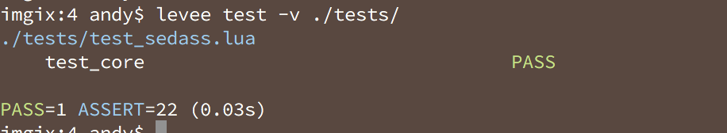
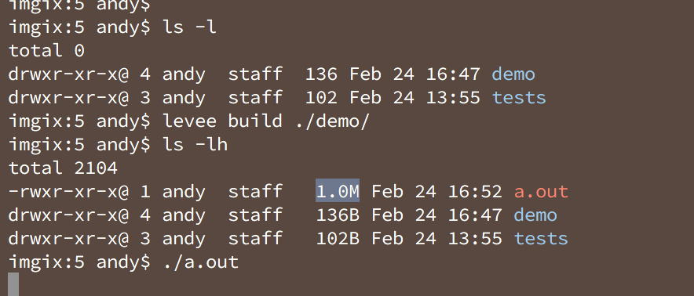

Levee
A Whirlwind Tour
Levee is a tool to succinctly and quickly create high performance network appliances.
Here's how it looks
local levee = require("levee")
local h = levee.Hub()
local err, serve = h.tcp:listen(9000)
for conn in serve do
h:spawn(function()
while true do
local err = conn:write("Hello World\n")
if err then break end
h:sleep(1000)
end
conn:close()
end)
end
Great FFI
local pid = C.getpid()
C.kill(pid, C.SIGHUP)
Callback hell

Chat relay
local err, serve = h.tcp:listen(9000, "0.0.0.0")
local connections = {}
for conn in serve do
h:spawn(function()
connections[conn.no] = conn
local stream = conn:stream()
while true do
local err, line = stream:line("\r\n")
if err then break end
for __, item in pairs(connections) do
item:write(line.."\n")
end
end
conn:close()
connections[conn.no] = nil
end)
end
demo/sedaas.lua
Sed as a service
return function(h)
local child = h.process:spawn(
"sed", {argv={"-l", "s/trump/orange pumpkin head/g"}})
local stream = child.stdout:stream()
return function(s)
child.stdin:send(s.."\n")
local err, line = stream:line()
return line
end
end
tests/test_sedaas.lua
local levee = require("levee")
local Sedaas = require("demo.sedaas")
return {
test_core = function()
local h = levee.Hub()
local sedaas = Sedaas(h)
assert.equal(sedaas("foo"), "foo")
assert.equal(sedaas("trump card"), "orange pumpkin head card")
end,
}
levee test
Add Sedaas to our chat relay
while true do
local err, line = stream:line("\r\n")
if err then break end
line = sedaas(line)
for __, item in pairs(connections) do
item:write(line.."\n")
end
end
HTTP endpoint
Metrics; whose connected?
local count = 0
local err, drop = h.http:droplet(8000, "0.0.0.0")
drop:route("/", function(h, req)
return ("connected: %s"):format(count)
end)
HTTP Endpoint
h:spawn(function()
connections[conn.no] = conn
count = count + 1
local stream = conn:stream()
while true do
local err, line = stream:line("\r\n")
if err then break end
line = sedaas(line)
for __, item in pairs(connections) do
item:write(line.."\n")
end
end
conn:close()
count = count - 1
connections[conn.no] = nil
end)
levee build
Try it out
brew install imgix/brew/levee